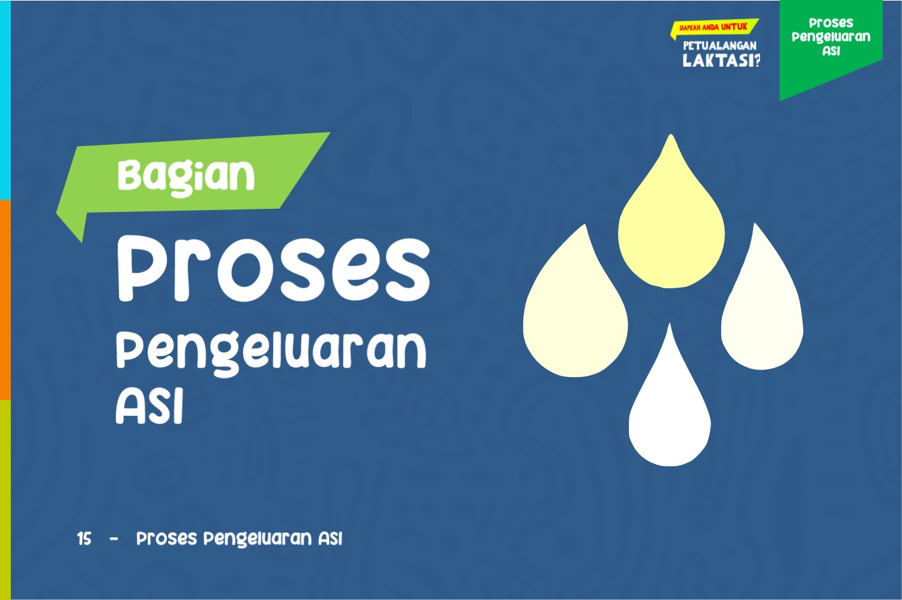
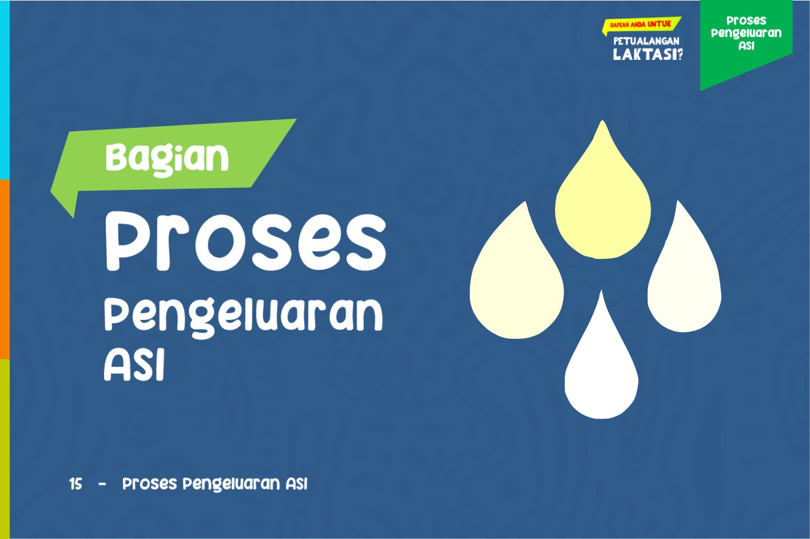
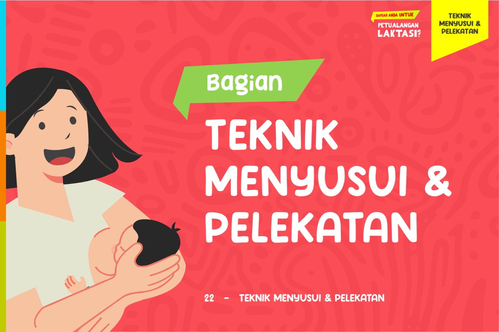
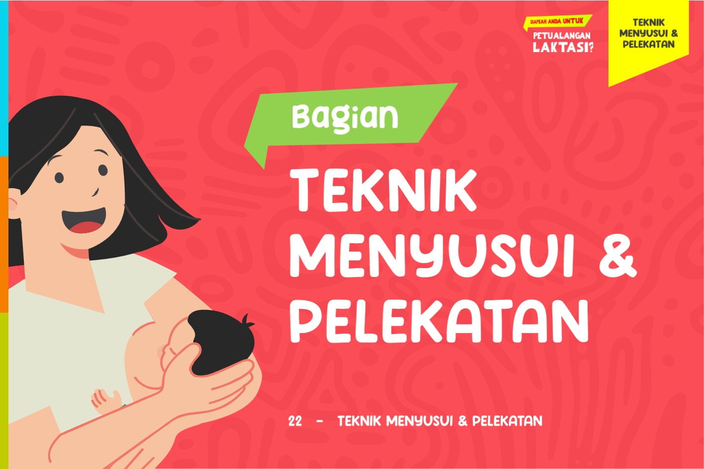

Home
E-book ini merupakan panduan yang komprehensif tentang laktasi, menyediakan informasi tentang fisiologi laktasi, manfaat ASI, IMD (Inisiasi Menyusui Dini), proses pengeluaran ASI, perbedaan antara ASI dan susu formula, teknik menyusui dan perlekatan, serta faktor yang meningkatkan produksi ASI. Dengan konten yang terstruktur dan mudah dipahami, e-book ini bertujuan untuk memberikan dukungan dan pengetahuan yang dibutuhkan oleh ibu menyusui.
About

Penulis e-book ini adalah Anita, Mahasiswi Kebidanan lulusan Poltekkes Kemenkes Tasikmalaya tahun 2024 yang berdedikasi untuk mendukung ibu-ibu dalam perjalanan mereka dalam menyusui. E-book ini juga berisi kontribusi dari beberapa penulis lain yang berpengalaman di bidangnya. Melalui e-book ini, Anita berbagi pengetahuan dan pengalaman untuk membantu pembaca memahami proses menyusui dan memberikan dukungan yang dibutuhkan.
List of Content
- Fisiologi Laktasi
- Manfaat ASI
- IMD
- Proses Pengeluaran ASI
- Perbedaan ASI dan Susu Formula
- Teknik Menyusui dan Perlekatan
- Posisi Menyusui
- Menyusui Bagi Ibu yang Bekerja
- Pijatan Untuk memperlancar ASI
- Tanda Bayi Lapar
- Menyendawakan Bayi Setelah Diberikan ASI
- Faktor yang dapat meningkatkan Produksi ASI
- Makanan yang Dapat Meningkatkan Produksi ASI
- Dukungan Pada Ibu Menyusui
- Daftar Pustaka
Book
 

 



Contact
Jika Anda memiliki pertanyaan, silakan hubungi Anita di anitasitikhadijahalbarra@gmail.com.